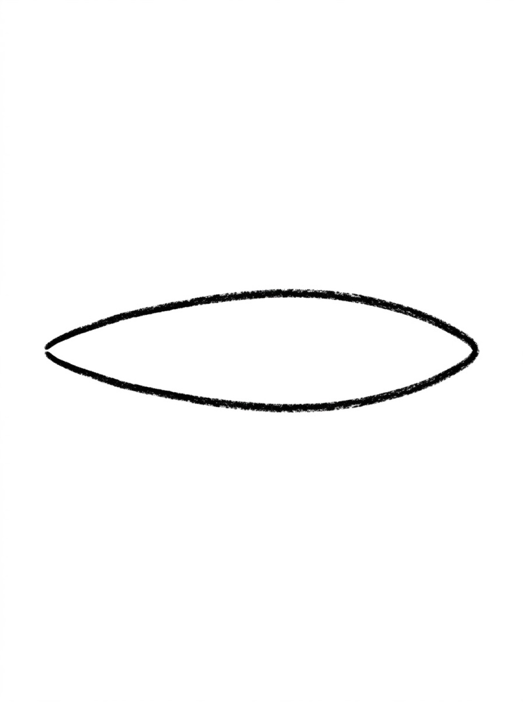
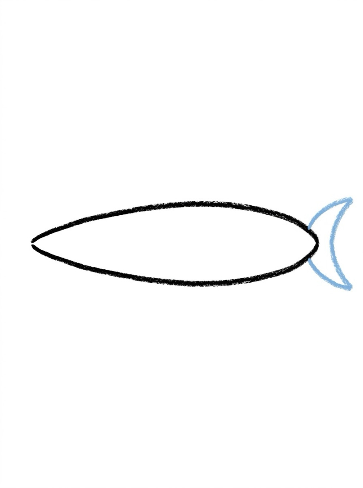
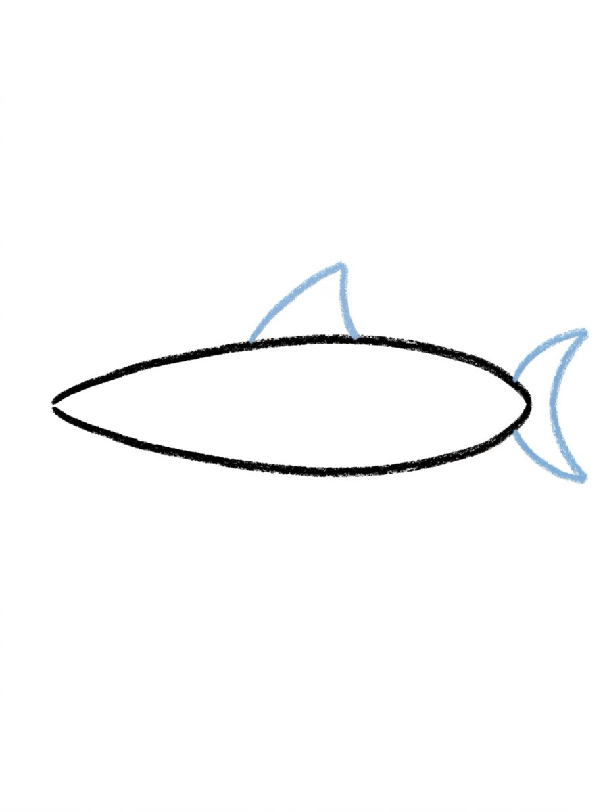
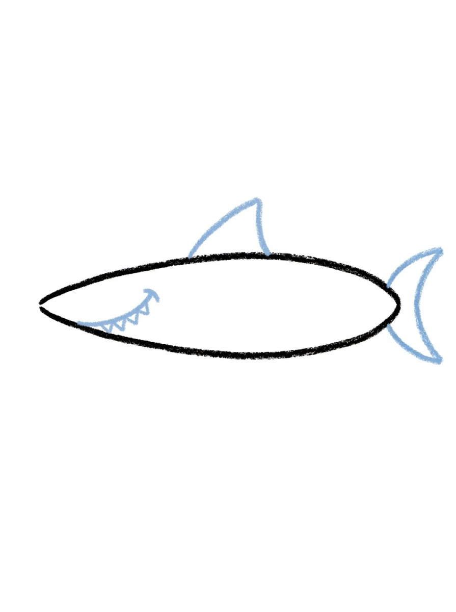
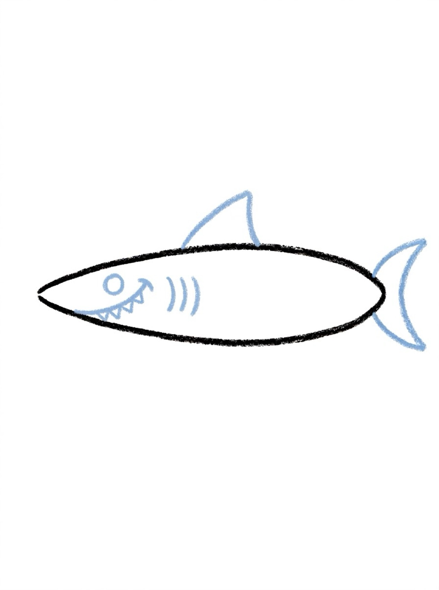
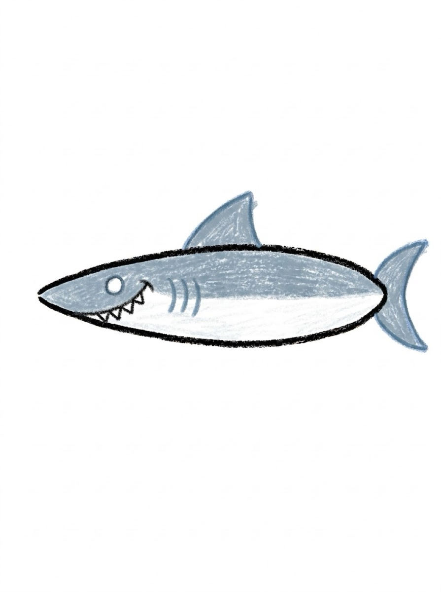

Shark Drawing for Kids How to Draw a Shark in 6 Easy Steps
Quick Answer
This free step-by-step tutorial shows kids how to draw a shark in six easy steps: a long oval body, a tail fin, a dorsal fin, a toothy mouth, an eye with gills, and color. Download the printable PDF, grab crayons, and follow along together. Made for ages 5 and up — no signup needed, just print and draw. Drawing sharks sounds daring, but the whole shark is one long oval plus triangles.
At a Glance
- Subject: How to draw a shark
- Ages: 5+
- Steps: 6 steps
- Time: ~15 min
- Difficulty: Easy
- Supplies: Paper, crayons
Sharks have a reputation, but on paper they're just a torpedo with triangles. The fins are the whole trick — three triangles turn a plain oval into something that looks fast and a little bit thrilling.
✏️ How to Draw a Shark: Step by Step
One step per box — draw each new part in a different color so kids can see exactly what changed.
Step 1: The Body

Draw a long sideways oval, pointier at one end — like a torpedo. This is the shark's body.
Step 2: The Tail Fin

Draw a sideways V or crescent shape at the back end for the tail fin.
Step 3: The Dorsal Fin

Draw a triangle on top of the body for the famous dorsal fin.
Step 4: The Toothy Mouth

Draw a curved smile line near the front and add little triangle teeth along it.
Step 5: Eye and Gills

Add a round eye above the mouth and three curved gill lines on the side.
Step 6: Color It In

Color the top blue-gray and the belly white — real sharks are two-toned!
📊 Shark Drawing by Age
Every age can join in — just adjust the job.
| Age | What they can do | Tip |
|---|---|---|
| 3–4 | Trace the oval body and color it in | Draw the teeth for them — tiny triangles need a steady hand |
| 4–5 | Draw body, tail, and dorsal fin with help | Call the dorsal fin the 'shark hat' — kids remember it |
| 6+ | Draw the whole shark solo | Challenge: draw the shark chasing three little fish |
🖨️ Download Your Free Shark Drawing Printable
The printable lays out all 6 steps one per box, big enough for little hands — kids draw right alongside each step.
⬇️ Open Free Printable 🖨️ Print🎁 Free printable for ages 3+
🦈 Deep Sea Scene
Draw your shark in the middle of a big blue ocean — wavy water lines, a sandy bottom, seaweed, and a school of tiny fish. The shark looks ten times cooler with a world around it. Bonus: the two-tone coloring (dark top, white belly) is real shark camouflage — fun fact for curious kids.
🦈 Sharks in the Real World
Kids who love drawing sharks usually want the facts too — and sharks have the best facts in the ocean. Sharks have been swimming the oceans since before there were trees — they are older than the dinosaurs, older than Mount Everest, and they have survived nearly everything the planet has thrown at them. A shark's skeleton is made of cartilage, the same bendy material as your ears and nose, which keeps it light and quick in the water.
A shark's teeth are endlessly replaceable: they grow in rows like a conveyor belt, and a shark may use tens of thousands of teeth in its lifetime. Sharks also sense the tiny electrical signals of other animals, a sixth sense people simply do not have. Ask your child whether their shark is a hunter, a cruiser, or the ocean's lifeguard — teeth out either way.
What You'll Need to Draw a Shark
Blue or gray for the body, white for the belly — the two-tone look is what makes a shark read as a shark. Black for the outlines and the eye. The triangle teeth need careful placement along the jaw line, so a crayon that isn't too blunt helps. Light blue paper makes a perfect ocean background.
What They're Learning
Sharks teach triangles in a fun context — the dorsal fin, the tail, and every single tooth. The curved body (a long arc, not a circle or oval) is a new line type that builds confidence with sweeping motions. Placing the eye, gills, and fins in the right spots is also good practice in picturing where parts go before drawing them.
Make It Yours
Drawing sharks your own way starts with the mouth — fierce teeth or a friendly grin changes the whole character. Add an open mouth full of triangle teeth for a fierce shark, or keep the mouth closed for a friendly one. Draw fish swimming away, seaweed on the ocean floor, or a treasure chest nearby. A hammerhead shark (wide flat head) is a fun variation once they've mastered the basic shape. Remoras stuck to the belly are a silly detail kids love.
🛒 Our Favorite Drawing Supplies
These are the supplies we reach for in our own home — washable (because kids), quality paper, and enough colors to avoid fights.
As an Amazon Associate, MomYouNeedThis earns from qualifying purchases — at no extra cost to you.
❓ Shark Drawing FAQs
What is the easiest way for a kid to draw a shark?
Draw a long torpedo-shaped oval for the body. Add a V-shaped tail fin, a triangle dorsal fin on top, a smiling mouth with triangle teeth, a round eye, and gill lines. Three triangles turn an oval into a shark.
What age can kids start learning to draw a shark?
Most kids can manage the oval body and triangle fins around age 5 with help, and the full shark solo by 6 or 7. The teeth are the fiddliest part for little hands.
What supplies do we need to draw a shark?
Paper and crayons or markers — blue-gray and white are the classic shark colors. The free printable PDF lays out all six steps one per box so kids can draw right alongside each step.
Is the shark drawing printable really free?
Yes — every printable on MomYouNeedThis is 100% free to download and print. No signup, no payment, just tap the download button.
Where can I find drawing sharks for kids?
Right here — the steps and the free printable PDF are both on this page, no signup needed. This shark is deliberately friendly: a smiling mouth with triangle teeth, built from one long body shape and three triangles.
How do I print the shark drawing tutorial?
Open the PDF and print at 100% scale (not 'fit to page') so the drawing boxes stay big enough for little hands. The printable is designed to stay large — never shrunk to force a fit.
📚 Keep Exploring
- ✏️ All 76 Drawing Tutorials 76 free step-by-step drawing tutorials for kids.
- 🐾 Animal Coloring Free printable animal coloring pages for little learners.
- ✏️ Drawing Practice Free printable drawing pre-writing worksheet for toddlers.